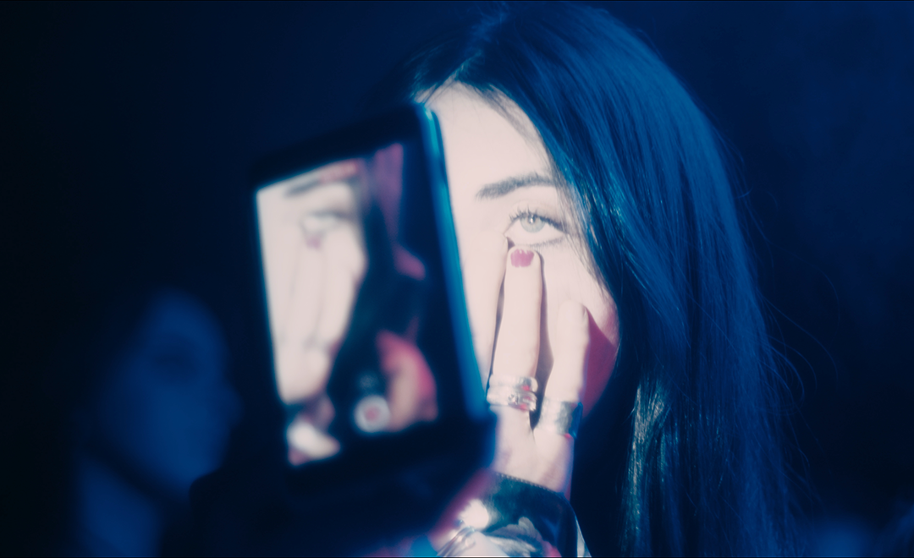
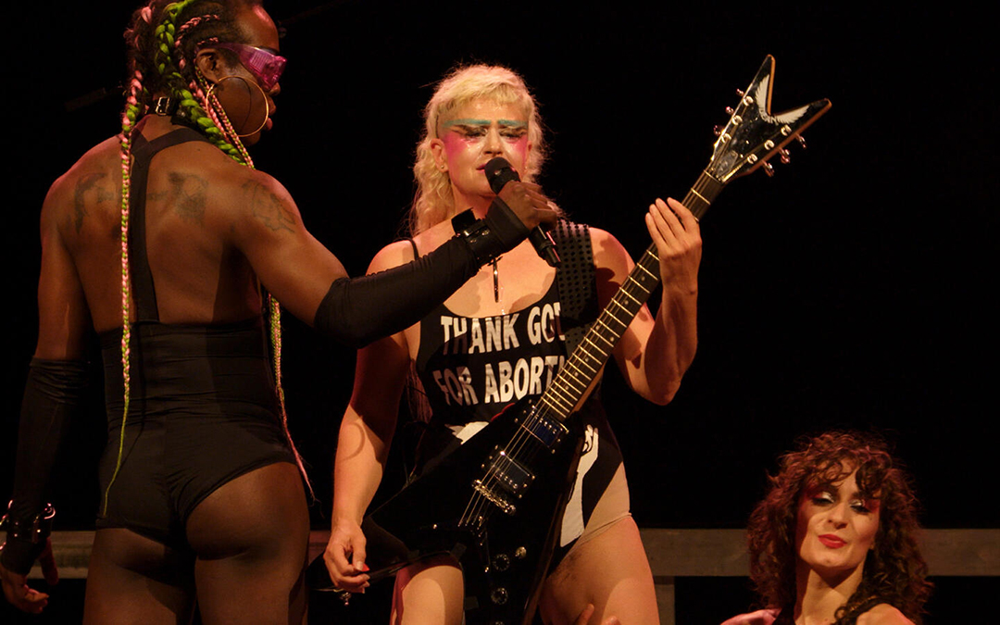

New Irish Shorts
Friday 2nd August 2024

Irish Film Institute | Cinema 1 | 17:30
1hr 49m + Q&A
Irish shorts are the beating heart of GAZE, and as always we have spread them
throughout our programme in various shorts blocks and pre-feature slots. The six
films screened as part of New Irish Shorts represent the breadth of Ireland's
film-making talent, concerning lesbian desire, parenthood, drag, HIV, and Gaeilge as
a secret sapphic love-language. We are honoured to welcome some of the makers with
us for a post-show conversation, so please join us.
There will be a post-screening Q&A with the filmmakers.
This Is Not An Attack On Your Parenting
Rory Fleck Byrne/ Ireland/ 2024/ 19m
A mother and her gay adult son, who has recently suffered a breakdown, explore their
opposing views on parenting.
Written by: Rory Fleck Byrne
Produced by: Killian Casey, Philip Emo
Homofónia
Luke K. Murphy/ Ireland/ 2023/ 11m
As their Debs application deadline approaches, a closeted couple sort their domestic issues as
Gaeilge, to prevent their classmates from knowing they're an item. However, translation issues
leave their relationship in jeopardy.
Written by: Alana Daly Mulligan, Luke K. Murphy
Produced by: Alana Daly Mulligan
Concerned
Hazel McGuire, Jenny Roche/ Ireland/ 2024/ 13m
Concerned ponders the gap between public 'concern' around gender, identity, child andparent
roles, and the private reality of those who are actually concerned; gender nonconforming people
and their families - all told through the filmmakers' own personal daughter/mother relationship.
Written by: Hazel McGuire, Jenny Roche
Produced by: Hazel McGuire, Jenny Roche
Terratoma
Liadán Roche/ Ireland/ 2024/ 24m
A trans woman tries to recreate a traumatic relationship for a film project.
Written by: Liadán Roche
Produced by: Molly Donnery
Spins, Splits, Stories
Alan Power/ Ireland/ 2024/ 5m
Leon Pinto, a singer and pole dancer from Australia, shares his personal
story of growing up in Australia and Ireland, culminating in a captivating
performance at The George. A film that invites you to take a moment and revel
in his raw and heartfelt recollection.
Written by: Alan Power
Dirty Talk
Eva Wyse/ Ireland/ 2024/ 15m
On the quest for intimacy in the middle of a global pandemic, Tar and Anna
meet for the first time in the hopes of having a socially distanced hook
up. No touching, just (attempted) dirty talk.
Written by: Madi O'Carroll
Produced by: Danilo Zambrano
Pregnant with a Drag Queen
Colin Brady/ Ireland/ 2024/ 22m
Pregnant with a Drag Queen unfolds the journey of how Enda McGrattan,
growing up as a queer person in 1990s Dublin, unlocked something within
themselves by giving birth to the vibrant drag persona Veda. Sharing their
transformative experiences on a live TV chat show, Enda contends with a sceptical
host before the show is suddenly derailed by the most beautiful woman in the world...
in their price range.
Written by: Colin Brady
Produced by: Steve Sheehy
Tops
Friday 2nd August
Light House Cinema | Screen 3 | 18:00
Dirs. Ames Pennington, Jos Bitelli
UK/ 2023/ 1hr 10m + in-conversation
TOPS is a genre-busting documentary ex- ploring the diversity of contemporary trans masc experiences.
Fun, clever, heartfelt and satirical, TOPS offers a brilliant pastiche of chaotic, brash, self-deprecating
and clueless 1990s/2000s British reality TV. Four interview- ees share intimate stories with our invasive,
neurotic and yet loveable director/host Ames Pennington. Guests include a powerlifter and Gay Games Olympian,
a housing-of- ficer-turned-actor, an Essex filmmaker, and an EDI specialist-slash-occasional model. TOPS makes
space for conversations around the vunerability of top surgery with those who've been there, in a gorgeous
celebration of trans masc identity. Yes, your nipples might fall off but you can still have a lol, yeah?
Pre Feature Short: Layered Identities: Intersectionality and LGBT+ rights
Isolde Godfrey, Jess Harvey/ UK/ 2022/6m
LGBT+ activists from around the world share what intersectionality means to them.
Artists: May Kindred-Boothby, Temujen Gunawardena, Saffron Cann, Isolde Godfrey
Hidden Master: The Legacy of George Platt Lynes
Friday 2nd August
Irish Film Institute | Cinema 2 | 18:15
Dir. Sam Shahid / USA / 2022 / 1hr 35m
George Platt Lynes is the brilliant American gay photographer you've almost certainly never heard of. By day, Lynes was one of the most sought after
celebrity and fashion editorial photographers of his day, but through the rest of his creative life he documented gay men from the 1930s to the 1950s
with a breadth of artistry that places him amongst the truly great American photographers. His stunning images come to the big screen for the first
time in this five-star documentary.
A friend of Gertrude Stein and Alfred Kinsey, and a key figure of the New York scene, the film explores just how such a treasure trove of queer imagery
could have almost been lost, and imagines what's inside the one remaining box of materials marked DO NOT OPEN. A feast for the eyes and a fascinating
journey into gay history, Hidden Master will put George Platt Lynes in the pantheon of greats where he belongs.
Writer: Sam Shahid
Producers: Matthew Kraus, Nando de Carvalho, John MacConnell
Pre Feature Short: Don't Cry For Me All You Drag Queens
Kristal Sotomayor / USA / 2023 / 9m
Paying homage to the legendary Mother Cavallucci, this short documentary weaves together present and past to provide a striking portrait of
belonging, memory, and the legacy of Joseph “Josie” Cavallucci in modern day America.
Producers: Kristal Sotomayor, Nic Cory, Daniel Brooks
Solo
Friday 2nd August
Light House Cinema | Screen 1 | 20:20
Dir. Sophie Dupuis / Canada / 2023 / 1hr 41m
Théodore Pellerin stars as Simon, a drag queen on the up in Montreal who is drawn into a passionate but complex romance with fellow newcomer drag artiste, Olivier, played with wicked acumen by Félix Maritaud. As his relationship seems to flourish, Simon is also reunited with his estranged mother Claire, whom he has not seen in fifteen years after she left to pursue her career as an opera singer. Passion, resentment, control, and freedom await the characters as they each navigate their own versions of stardom and success. Described as All About Eve meets Opening Night meets Passages, this is queer eye-candy extravaganza with a hard centre.
Writer: Sophie Dupuis
Producer: Etienne Hansez
Pre Feature Short: Izzy Aman: The Joy of Drag
Isabella Walton / UK / 2023 / 13m
Through the art of thrusting, painting, and mimicry, we witness a gender-bending revolutionary performance alongside a candid and powerful conversation about how we can create social change with drag.
Writer: Isabella Walton
Producer: Beth Mai Sanders
Teaches of Peaches
Friday 2nd August

Irish Film Institute | Cinema 1 | 20:20
Dirs. Philipp Fussenegger, Judy Landkammer
Germany, Austria / 2024 / 1hr 42m
At the dawn of the new millennium, Canadian musician Merrill Nisker unleashed the mighty Peaches onto an unsuspecting
world with her soon-to-be iconic album, "The Teaches of Peaches." Minds were duly blown. Berlin was the centre of the
universe and electroclash was the sound of the clubs. Bi, beautiful, bolshy, and brilliant, Peaches was a musical dynamo
that gave a kick up the rear to the boys' club of contemporary music.
Twenty-plus years later, this heart-racing documentary travels back to the early days of Peaches and traces the artistic
journey of this musical dynamo as the queer feminist electro punk we deserved. Pairing incredible early gig footage with
Peaches and her queer crew taking the show on the road today, this is a tale of women in art, queer family, finding your
limits, and keeping on keeping on. Come and celebrate a genuine icon with us. Shake yer dix, shake yer tits.
This film screening is proudly supported by the Goethe-Institut Ireland.
Writers: Cordula Kablitz-Post, Schyda Vasseghi
Producer: Cordula Kablitz-Post
Pre Feature Short: Lavender Outlaws
Damon Beirne / USA / 2023 / 15m
Amidst a wave of violence and restrictive legislation, a group of musicians converge on Nashville, Tennessee, to reveal the true outlaws of country music.
Additional Short: Stare
Hannah Bloom & Freya Gillespie / Ireland / 2024 / 5m
Official music video for Naoise's single 'Stare', The Masked Post-Person defeats numerous opponents in the ring.
Riptide
Friday 2nd August
Irish Film Institute | Cinema 2 | 20:40
Dir. Afrad Vk / India / 2024 / 1hr 25m
Afrad Vk's debut feature is a beautiful tragic romance between two young men preparing for the final days of
college life. Suku and Charlie are roommates turned lovers, cocooned in their own private world, filling their
days with literature, sex, drinking, and the pull of the Arabian Sea.
When Suku has to leave town suddenly due to a near-death health crisis, an abrupt pause is brought to their idyllic
life. On his return, everything has changed. Reality and fantasy merge, the colonial past creeps into the present,
and the lovers must reckon with the real world. Filmed on location in Kerala, the beautiful coastal light gives this
film the hazy dreamlike quality that befits the tale. Riptide offers a queer antidote, centering love and romance
between men but facing head-on the perils of living an authentic gay life.
Writer: Afrad Vk
Producer: Komal Unawnay
Pre Feature Short: Halfway
Kumar Chheda / India / 2023 / 9m
In the bustling heart of Mumbai, a turbulent couple starts at opposite ends of Juhu beach, walking towards
each other in a heartfelt ode to those willing to meet halfway and make their love work.
Writer/Producer: Kumar Chheda
Presented in proud partnership with Queer Spectrum Film Festival.